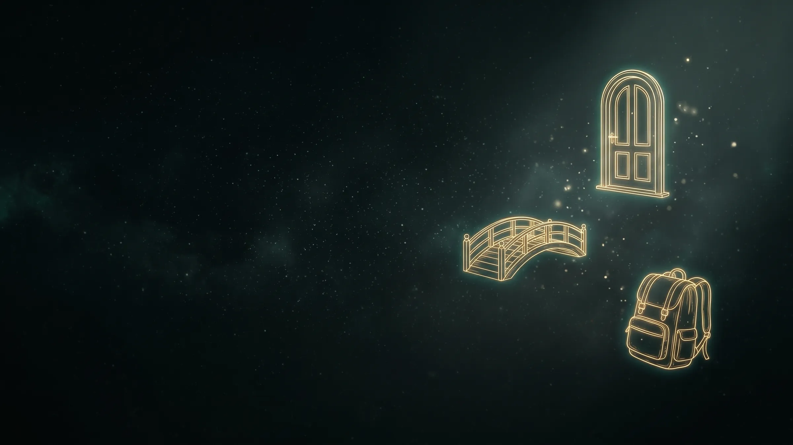
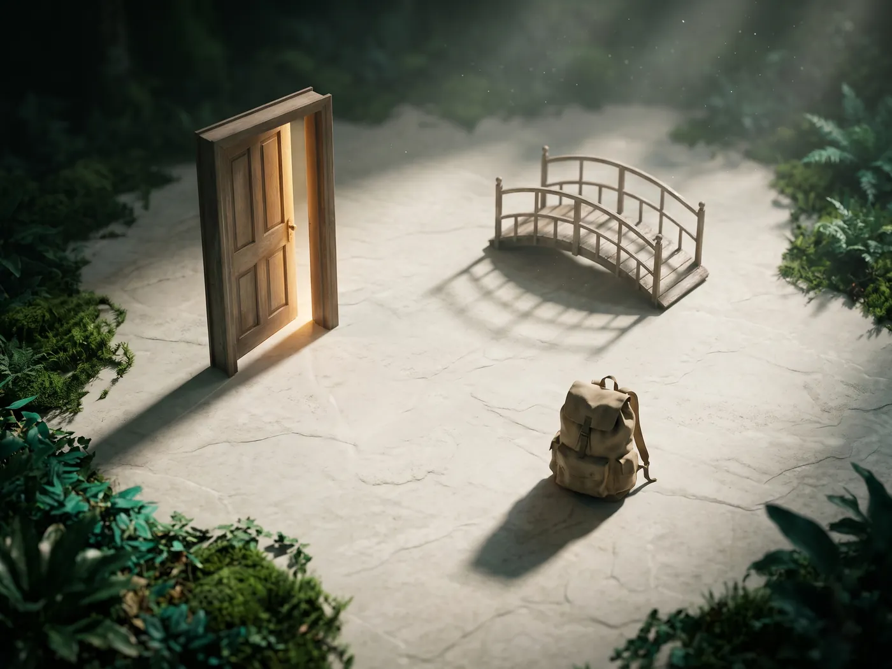

Shift the perspective.
Explore dynamics through embodied, symbolic interaction, the kind of work that's been out of reach online.
A bridge. A backpack. A door.
Objects that carry meaning without needing explanation, brought into the session so your client can work with them directly.
Place the backpack down and ask what's in it. Position the door across the room and ask what's on the other side. Have a client set two objects at whatever distance feels true, then move one and notice what happens in their body when they do. Abstract feelings become things with location, weight and distance, visible to both of you.

The tools coaching lost online come back.
Constellation work, embodiment and metaphor have always been among coaching's most powerful tools, and among the first casualties of moving online. In a virtual space they come back, with a flexibility that even a physical room can't offer.
A note on method
Objects support the client's own imagery. They're offered, never imposed. If a client's internal metaphor doesn't match what's on the shelf, the metaphor wins.
Be among the first coaches inside.
We're onboarding a limited group of coaches for early access.